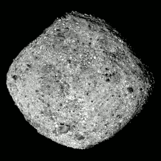
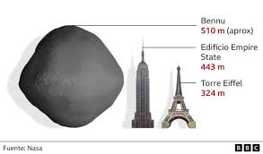
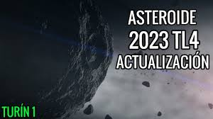
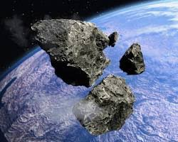
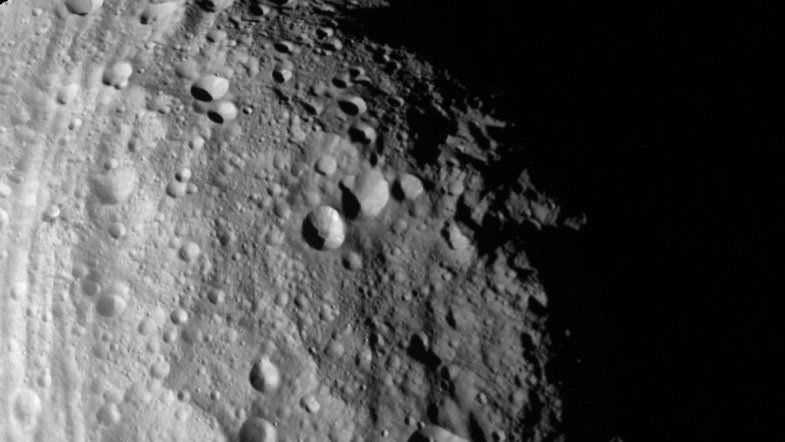

Bennu |
|---|
Bennu es un asteroide próximo a la Tierra de unos 500 metros de diámetro y una masa de 6 × 1010 kg. Su acercamiento máximo al Sol (perihelio) queda en el interior de la órbita de la Tierra y su alejamiento máximo (afelio) llega casi a la órbita de Marte. |
|  |
| Más información |
1950 DA |
|---|
1950 DA es un asteroide cercano a la Tierra, de algo más de 1 km de diámetro. Se destaca por tener la más alta probabilidad conocida de impactar contra la Tierra. |
  |
| Más información |
2023 TL4 |
|---|
El asteroide 2023 TL4 es un asteroide de pequeño tamaño que fue descubierto en 2023. Se estima que su probabilidad de impacto en la Tierra es extremadamente baja. |
|  |
| Más información |
2007 FT3 |
|---|
2007 FT3 es un asteroide de la familia Apolo, descubierto el 20 de marzo de 2007. Es conocido como un "asteroide perdido" debido a la dificultad de rastrear su órbita. |
  |
| Más información |
1979 XB |
|---|
1979 XB es un asteroide perdido con un arco de observación corto de 3,9 días. Ha figurado en la Tabla de Riesgo Sentry desde que comenzó la lista en 2002. |
 |
| Más información |